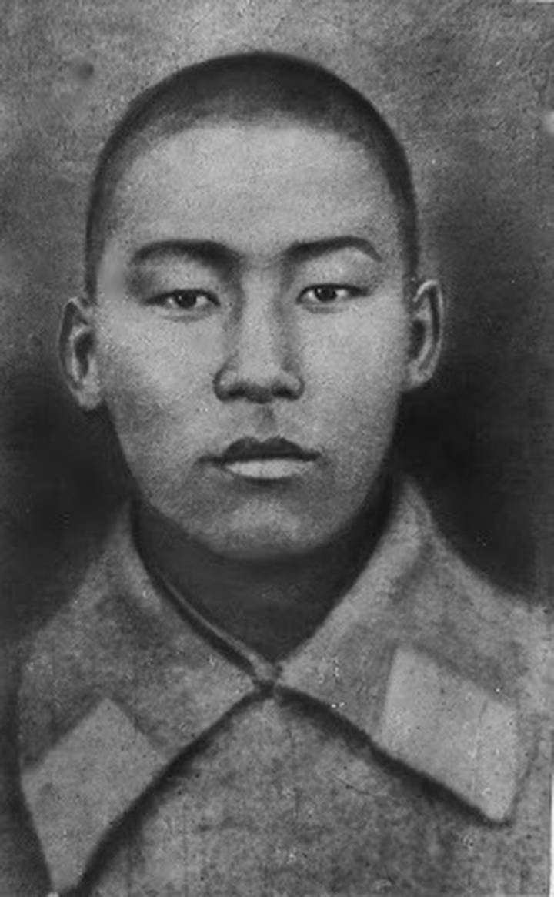

Асанов награждён медалью «За боевые заслуги» за то, что в бою 1 февраля 1943 года прямой наводкой орудия уничтожил 2 пулеметных точки и 2 блиндажа, быстро продвигаясь вперед вместе с боевыми порядками пехоты
Шопоков, первый принял на себя атаку фашистов, когда немцы окружив его, предлагали сдаться, и в упор убил два фашиста и от пули 3-го фашиста героически погиб.
Иван Москаленко в составе группы истребителей танков участвовал в отражении многочисленных атак противника, было уничтожено 18 вражеских танков
В боях за Родину Анварбек Чортеков показал себя мужественным и отважным бойцом. Особый героизм и стойкость проявил во время форсирования реки Днепр и в боях за населенные пункты Григорьевка, Лохвицы.
Николай Ананьев, в составе группы бойцов-истребителей танков — в ходе затяжного боя, отражавшего танковые атаки противника из 50 танков, задержав вражеское наступление на 4 часа, и уничтожив при этом 18 вражеских танков и несколько сотен солдат противника, — пал смертью храбрых, в числе других бойцов-красноармейцев, погибших, героически выполнивших свой воинский долг, встав на пути продвижения вражеских войск к Москве

Чолпонбай. Ему удалось подползти к дзоту на расстояние 4—5 метров. Будучи раненным в правое плечо и израсходовав весь запас гранат, красноармеец Тулебердиев бросился на амбразуру и закрыл её своим телом, заставив замолчать вражеский пулемёт на несколько секунд.